Lab 7 - Exposing a SOAP Service with FIS
 |
In this lab you will expose an existing SOAP based JEE application running on a JBoss EAP container in the same OCP cluster. To do this, you will deploy a Fuse Integration Services (FIS) application to OCP, which was configured to expose it as a REST service. |
|---|---|
- Open a web browser and go to https://github.com/pszuster/3ScaleTD/blob/master/Stores/src/main/java/com/redhat/service/StoresWS.java
- This simple java class implements a JAX-WS SOAP webservice that allows consumers to create, delete or get Stores from RHMart.

- Go to https://threescale.3scale[your instance #].rhtechofficelatam.com:8443
- Login as admin/admin
- Select the Stores API project.
- Click on the Add to Project button.

- Enter “stores-soap” in the Browse Catalog search field.
- Click on the Select button in the found template.

- Modify the “Custom http Route Hostname” to: stores-soap.3scale[tour instance #].rhtechofficelatam.com
- Scroll down to the bottom of the page and click on the Create button.
- Click on the Continue to Overview link.
- After ~5min the Stores SOAP API should be up and running (there should be two blue circles).

- Open a new web browser tab, and go to http://wsdlbrowser.com/
Enter the following value:
WSDL URL: http://stores-soap.3scale[your instance #].rhtechofficelatam.com/StoresWS?wsdl
Click on the Browse button.
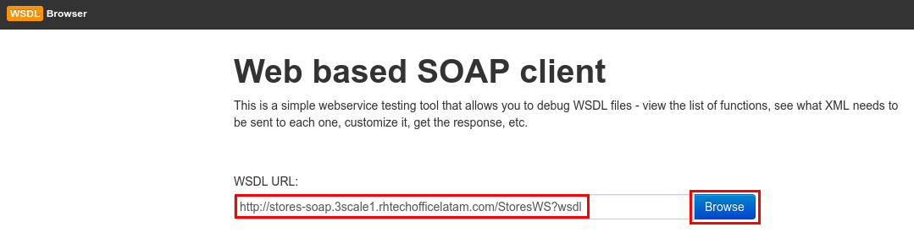
- Click on the getAllStores Soap operation.
- Click on the Call Function button.
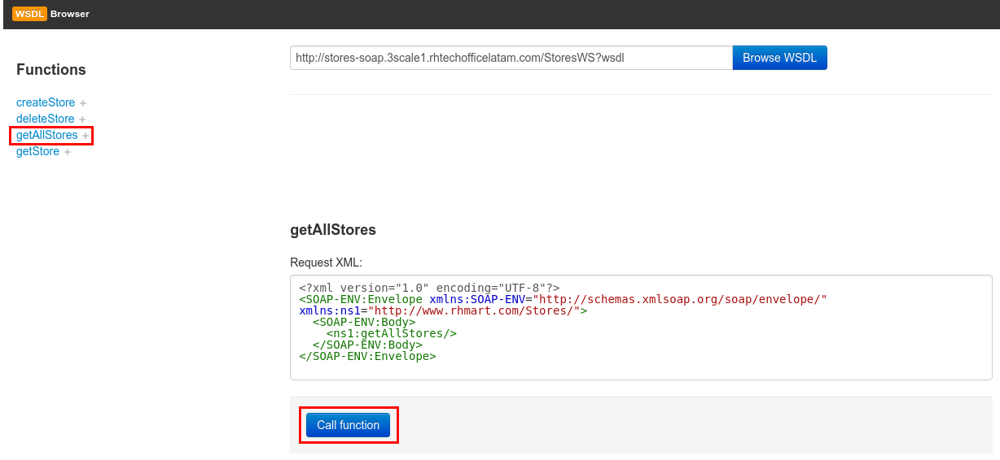
- Close the browser tab, and go back to OpenShift console.
- Make sure you are in the Stores API project.
- Click on the Add to project button.
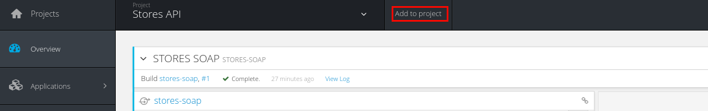
- Enter “stores-fis” in the Browse Catalog search field.
- Click on the Select button in the found template.

- Change the HostName parameter to: stores-fis.3scale[your instance #].rhtechofficelatam.com
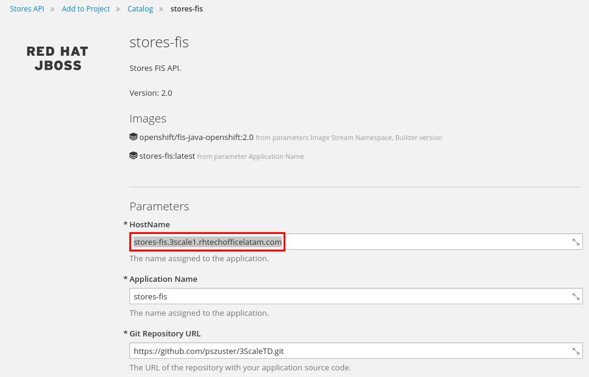
- Scroll down to the bottom of the page, and click on the Create button.
- Click on the Continue to overview link.
- After ~3min the Fuse Integration Services container should be up and running (there should be a blue circle).

 |
This Fuse Integration Services container, has a SpringBoot Camel route, that transforms REST requests to SOAP requests and XML SOAP responses to JSON documents. |
|---|---|
- Open a new web browser tab, and go to http://stores-fis.3scale[your instance #].rhtechofficelatam.com/allstores/
- You should receive a JSON document generated from the SOAP response.
- Close the tab.
- Go to https://3scale-admin.3scale[your instance #].rhtechofficelatam.com.
- Click on the configuration icon.
- Click on Personal Settings.
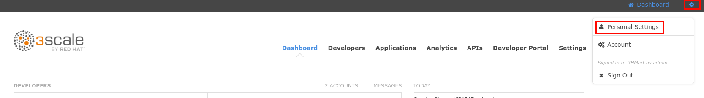
- Click on the Tokens tab.
- Click on the Add Access Token link.
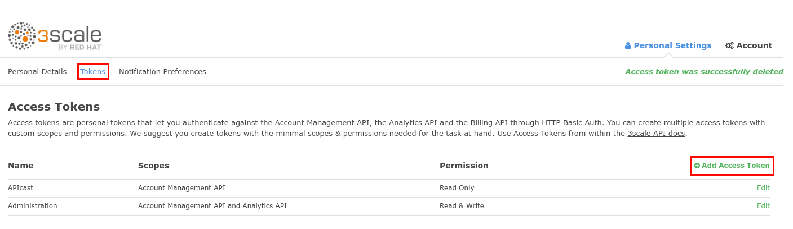
- Enter Name: importer
Check on both
Account Management API
Analytics API
Select Permission: Read & Write.
- Click on the Create Access Token button.
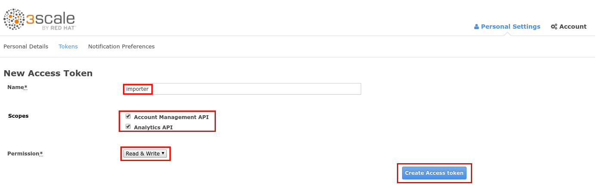
- Select and copy the generated Token.
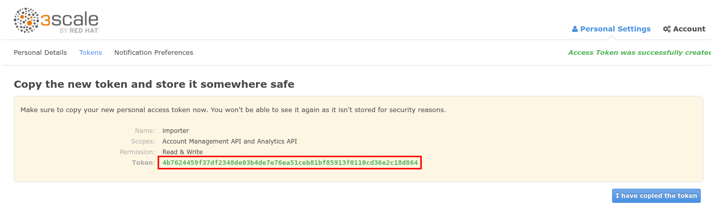
- Open a new web browser tab and go to http://swagger-import.3scale[your instance #].rhtechofficelatam.com/
Enter the following values:
Access Token: paste the copied Token.
- 3Scale ID: 3scale
- Wildcard Domain: 3scale[your instance #].rhtechofficelatam.com
Swagger File URL: http://stores-fis.3scale[your instance #].rhtechofficelatam.com/api-docs
Click on the Import API button.
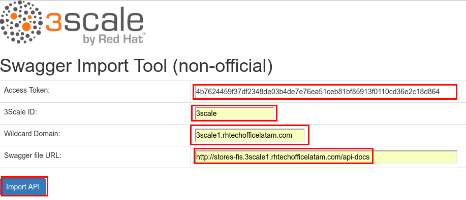
- After a couple of seconds, the import should be done.

- Close the browser tab.
- Go back to https://3scale-admin.3scale[your instance #].rhtechofficelatam.com.
- Click on the APIs tab.
- Expand Stores API.
- Click on the Create Application Plan link

Enter the following values:
Name: StoresPremiumPlan
System Name: storesPremiumPlan
Click on the Create Application Plan button.

- Click on the Publish link.
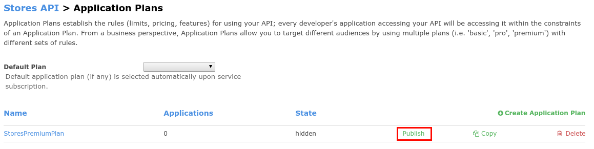
- Click on the Developers tab.
- Click on the RHBank account.

- Click on the 3 Applications. Breadcrumb.
- Click on the Create Application link.

- Select the StoresPremiumPlan.
Enter the following values:
Name: storesApp
Description: Stores Application
Click on the Create Application button.

- Click on the Stores API link.
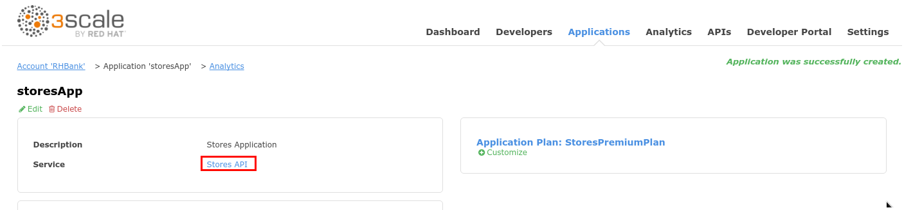
- Click on the Integration tab.
- Click on the add the base URL of your API and save the configuration button.
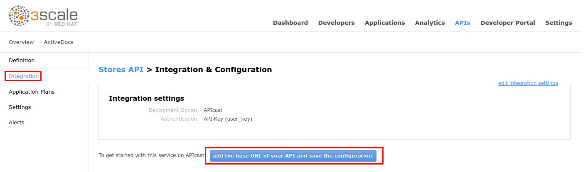
Enter the following values:
Private Base URL: http://stores-fis.3scale[your instance #].rhtechofficelatam.com
- Staging Public Base URL: https://stores-apicast-staging.gateway.3scale[your instance #].rhtechofficelatam.com:443
- Production Public Base URL: https://stores-apicast-production.gateway.3scale[your instance #].rhtechofficelatam.com:443
API test GET request: /allstores
Click on the Update & test in Staging Environment button.
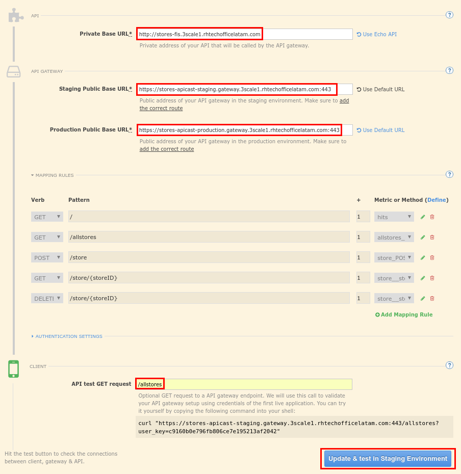
- You should receive a successful validation.
- Click on the Back to Integration & Configuration link.

- Click on the Promote v1 to Production button.

- Click on the ActiveDocs tab.
- Click on the Edit icon for the Stores API spec.

- Change the host attribute to: stores-apicast-production.gateway.3scale[your instance #].rhtechofficelatam.com
- For each of the four user_key parameters, add the following attribute: ,"x-data-threescale-name": "user_keys"

- Scroll down to the bottom of the page and click on the Update Service button.
- Open a web browser tab and go to https://stores-apicast-production.gateway.3scale[your instance #].rhtechofficelatam.com and accept the SSL certificate.
- Close the tab and go back to the Stores API ActiveDoc.
- Expand the /allstores operation.
- Click on the user_key parameter field and select the storesApp user key.
- Click on the Try it out! button.
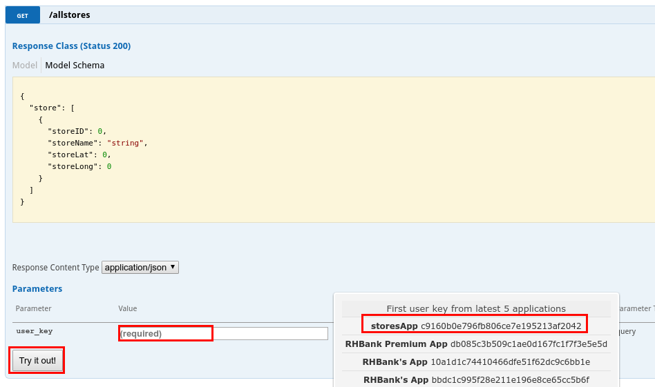
- You should receive a JSON document with a list of stores.